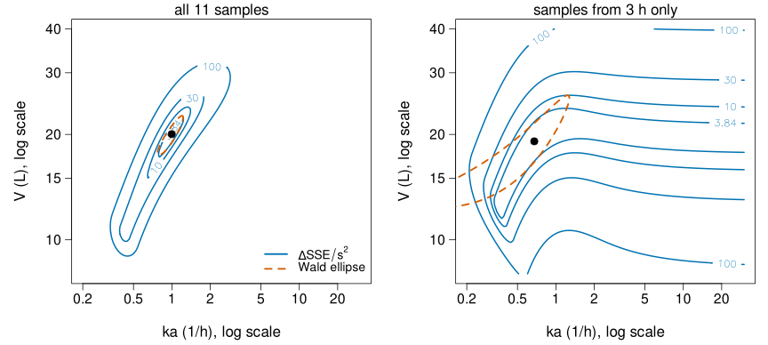
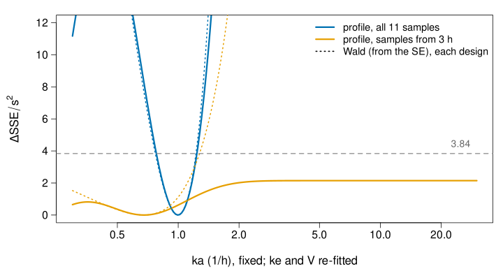
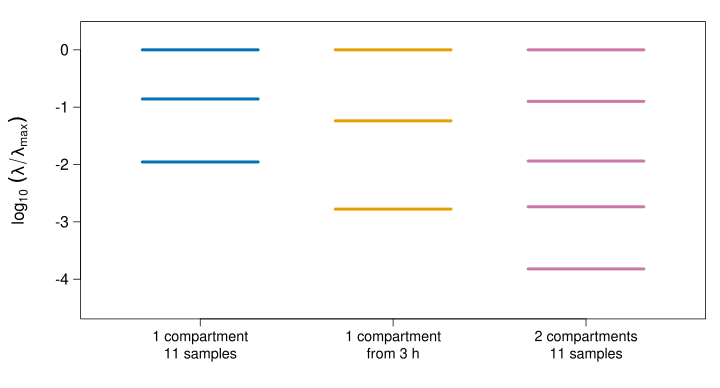
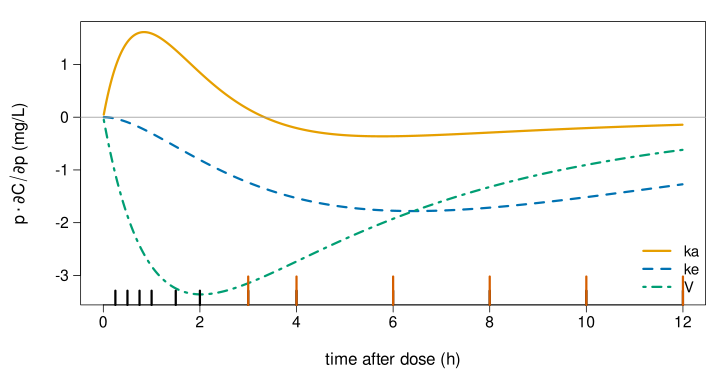

Identifiability and uncertainty of fitted parameters
Part 10 — Optimisation and model fitting
Numerical analysis for biologists
About this lecture
In Nonlinear least squares and ODE fitting we fitted a pharmacokinetic model and got numbers for k_a, k_e and V. This lecture asks how much those numbers can be trusted.
Structural non-identifiability: the model itself cannot tell parameters apart (a product F\!\cdot\!D/V; the k_a/k_eflip-flop). No amount of data helps.
Practical non-identifiability: the model could, but these data do not.
Near the optimum the sum of squares is a bowl. Its curvature, the Hessian\approx 2J^TJ, gives standard errors\sqrt{\operatorname{diag}(s^2(J^TJ)^{-1})} and a correlation matrix.
One oral dose of 100 mg; the first blood sample is taken at 3 h. Three fits with absorption rate k_a = 1.12, 3 and 20 /h (each with k_e and V re-fitted) pass equally well through the data.
The grey circles are what early samples would have shown. Without them, the data cannot say how fast the drug was absorbed.
nls happily reports k_a = 1.12 \pm 0.41 /h. Is that number worth anything?
Recap: the model and the fit
One-compartment model, oral dose D, bioavailability F (fraction absorbed):
D <-100# mgtt <-c(0.25, 0.5, 0.75, 1, 1.5, 2, 3, 4, 6, 8, 10, 12) # hbateman <-function(t, ka, ke, V) D * ka / (V * (ka - ke)) * (exp(-ke * t) -exp(-ka * t))y <-c(1.02, 1.88, 2.34, 2.98, 3.27, 3.26, 3.17, 2.77, 1.92, 1.23, 1.00, 0.61) # mg/Lfit <-nls(y ~bateman(tt, ka, ke, V), start =list(ka =0.5, ke =0.1, V =10))coef(fit)# ka ke V# 1.0150721 0.1906157 20.2162113deviance(fit) # residual sum of squares# [1] 0.06646744
Data, code names and fit as in the previous unit: 12 samples, F = 1 assumed. Truth: k_a = 1, k_e = 0.2 /h, V = 20 L, noise SD 0.1 mg/L. Its RSS is our SSE, S(\theta).
Two kinds of trouble
A parameter is identifiable if the data determine it: different values give different predictions.
Structural
Practical
Cause
the model equations
the data (too few, too noisy, badly placed)
Perfect, noise-free data
still not determined
determined
Example
F and V only as F/V; flip-flop
k_a with first sample at 3 h
Symptom
J exactly rank-deficient; equal-SSE minima
huge SE, |r| \to 1, flat profile
Fix
reparameterise, add a different experiment
better design, more data, prior
Structural (1): parameters that only appear as a product
If the bioavailability F is unknown, F and V enter only through F/V: doubling both changes nothing.
nls(y ~bateman(tt, ka, ke, V / F), start =list(ka =0.5, ke =0.1, V =10, F =0.8))# Error in nlsModel(...) : singular gradient matrix at initial parameter estimateslibrary(numDeriv) # numerical Jacobian and Hessianp4 <-c(coef(fit), F =1)J4 <-jacobian(function(p) bateman(tt, p[1], p[2], p[3] / p[4]), p4)svd(J4 %*%diag(p4))$d # columns scaled: d C / d log p# [1] 1.189228e+01 3.483442e+00 1.047785e+00 2.252039e-11round(svd(J4 %*%diag(p4))$v[, 4], 3)# [1] 0.000 0.000 -0.707 -0.707 # log V and log F together
The Jacobian has an exact null direction: \sigma_4 \approx 10^{-11} (rounding), v_4 \propto (0, 0, 1, 1) in (\log k_a, \log k_e, \log V, \log F).
Fix: fit and report the identifiable combination, the apparent volumeV/F. Separating F needs a different experiment (an IV dose).
Two exact minima, same SSE (0.06646744): (1.0151, 0.1906, 20.22) and (0.1906, 1.0151, 3.796). Each is locally identifiable (right: fix k_a, re-fit the rest: two wells of equal depth); globally the data cannot choose.
Check: multistart. Equal SSE at different parameters = a symmetry, not a convergence problem. Fix: outside knowledge: an IV dose gives k_e; or impose k_a > k_e by fitting k_a = k_e + e^{\delta}.
Near the optimum the SSE is a bowl
Taylor expansion of S(\theta) = \sum_i r_i(\theta)^2 around the optimum \hat\theta (gradient = 0):
S(\hat\theta + \delta) \approx S(\hat\theta) + \tfrac12\,\delta^T H\,\delta, \qquad H = \nabla^2 S
With residuals r_i = y_i - C(t_i;\theta) and the Jacobian J_{ij} = \partial C(t_i)/\partial\theta_j (12\times3):
H = 2J^TJ \;-\; 2\sum_i r_i\,\nabla^2 C(t_i) \;\approx\; 2J^TJ
The second term is small when residuals are small and random: this is the Gauss–Newton approximation from the previous unit.
Steep directions of the bowl (large eigenvalues of H) are well determined; flat ones are not.
Standard errors from the Jacobian
If the noise is independent with variance \sigma^2, the estimate is approximately normal with
H and 2J^TJ agree to 0.3 %: the Gauss–Newton approximation is good here.
In likelihood language: -\log L = S/(2\sigma^2) + \text{const}, so the Fisher information is \mathcal I = J^TJ/\sigma^2 and \operatorname{Cov} \approx \mathcal I^{-1}. For a general likelihood: invert the Hessian of -\log L (optim(..., hessian = TRUE)).
v_3: increase k_a, decrease k_e, increase V together (the sign of v_3 is arbitrary). The data barely notice.
Scaling and conditioning
kappa(J, exact =TRUE) # columns in 1/h, 1/h and L# [1] 169.9302kappa(Jl, exact =TRUE) # columns per unit log-parameter# [1] 8.733995kappa(crossprod(J), exact =TRUE) # forming J^T J squares kappa# [1] 28876.26
Part of a large \kappa(J) is just units (V in litres vs rates per hour). Log-parameters remove that part; what is left is real.
As in Pivoting, norms and conditioning: solving with J^TJ loses about \log_{10}\kappa(J)^2 digits. vcov uses the QR factor R of J: (J^TJ)^{-1} = R^{-1}R^{-T}.
solve(crossprod(J)) on a sloppy model can return garbage or fail: use chol2inv(qr.R(qr(J))) or the SVD.
Practical non-identifiability: samples from 3 h
late <- tt >=3# first sample at 3 hfits <-nls(y ~bateman(tt, ka, ke, V), start =list(ka =1, ke =0.2, V =20),subset = late)summary(fits)$coefficients[, 1:2]# Estimate Std. Error# ka 1.1220379 0.40551186# ke 0.1882042 0.01525188# V 20.1639648 0.76727489round(cov2cor(vcov(fits)), 3)# ka ke V# ka 1.000 -0.852 0.522# ke -0.852 1.000 -0.835# V 0.522 -0.835 1.000
After 3 h the curve is \approx A\,e^{-k_e t} with A = D k_a/(V(k_a - k_e)): only two numbers, for three parameters.
The SE says k_a = 1.12 \pm 0.41; Wald 95 % interval (0.33, 1.92). The truth (1.0) is inside, but is this interval right?
Where the bowl picture fails

Contours of \Delta S/s^2 over (k_a, V), with k_e re-fitted at each point; red: the ellipse that the SEs and correlations describe.
All samples: the ellipse matches the valley. From 3 h: the valley is open to the right: k_a \to \infty (instant absorption) fits as well. The ellipse cannot show that.
The profile likelihood
To check one parameter, fix it on a grid and re-optimise all the others:
prof <-function(ka, tt, y) { # fix ka, re-fit ke and V f <-nls(y ~bateman(tt, ka, ke, V), start =list(ke =0.2, V =20))deviance(f)}crit <-function(ka) (prof(ka, tt, y) -deviance(fit)) / s2 -3.84ka_hat <-coef(fit)[["ka"]]c(uniroot(crit, c(0.3, ka_hat))$root, uniroot(crit, c(ka_hat, 30))$root)# [1] 0.8971499 1.1417900 # profile intervalka_hat +c(-1.96, 1.96) *sqrt(vcov(fit)["ka", "ka"])# [1] 0.8927063 1.1374380 # Wald interval
3.84 = 1.96^2 is the 95 % point of \chi^2_1. For a linear model the two intervals are identical.
Profiles show what the SE hides

All samples (blue): a clear well, close to the Wald parabola (dotted). k_a \in (0.90, 1.14).
From 3 h (orange): a lower bound (0.68), but on the right the profile levels off at 1.07, far below 3.84: no upper bound. The Wald interval (0.33, 1.92) is wrong at both ends.
Sloppy models

Eigenvalues \lambda_i of J^TJ (log-parameters, so units do not matter), relative to the largest.
Two-compartment version (5 parameters: k_a, k_{10}, k_{12}, k_{21}, V), same 12 sample times: eigenvalues spread over 4.5 decades, with no gap.
SE along each eigenvector \propto 1/\sqrt{\lambda_i}: the stiffest combination is known 180× better than the sloppiest.
Typical of biochemical network models (Gutenkunst et al. 2007): a few stiff combinations, many sloppy ones, no clear gap.
Sloppy parameters, good predictions
Prediction SE at time t^*: with g = \partial C(t^*)/\partial\theta, \operatorname{Var}\hat C(t^*) \approx g^T\operatorname{Cov}(\hat\theta)\,g.
t^* (h)
0.5
1
6
12
truth
1.86
2.82
1.87
0.57
all samples: \hat C \pm SE
1.87 ± 0.04
2.83 ± 0.04
1.93 ± 0.04
0.62 ± 0.04
from 3 h: \hat C \pm SE
2.02 ± 0.51
3.00 ± 0.54
1.92 ± 0.05
0.62 ± 0.05
From 3 h: predictions inside the sampled window are as good as with all samples; before 3 h they are 12× less certain.
Ask what you need the model for. A sloppy model can predict well where the data constrain it, while its parameters are not determined.
Fix 1: choose the sampling times

Relative sensitivities \theta_j\,\partial C/\partial\theta_j: k_a matters only in the first 3 h; k_e late; V near the peak. Ticks: all samples (black), from 3 h (red).
J needs only a guess of \theta, not data: compare designs before the experiment.
Six samples either way. Moving three of them before 3 h cuts the SE of \log k_a from 0.40 (a factor 1.5) to 0.10 (10 %); k_e even improves.
The guess \theta need not be right, only roughly right. Check several guesses.
These are linearised SEs; for the first design the profile showed the truth is worse still.
Try it: move the samples, watch the ellipse
Fix 2: reparameterise
Log-parameters\theta = \log k: positivity for free, columns of J on the same scale (\kappa 170 → 8.7), and the bowl is often more nearly quadratic (better SEs, as factors).
Fit what is identifiable. Unknown F: estimate V/F, not F and V. From 3 h only: the late curve A e^{-k_e t} determines k_e, A, and the clearance-type quantity \text{AUC} = FD/(k_eV).
Remove a symmetry.k_a = k_e + e^{\delta} allows only the branch k_a > k_e: no flip-flop.
Reparameterising does not create information. It moves the undetermined part into one named parameter and keeps the rest clean.
Fix 3: a prior is an extra residual
Prior knowledge “k_a is about 1.2 /h, within a factor e^{0.5} = 1.65” becomes one more residual, (\log k_a - \log 1.2)/0.5:
library(minpack.lm)res <-function(lp, tt, y) c((y -bateman(tt, exp(lp[1]), exp(lp[2]), exp(lp[3]))) /0.1, (lp[1] -log(1.2)) /0.5)fp <-nls.lm(par =log(c(1, 0.2, 20)), fn = res, tt = tt[late], y = y[late])exp(fp$par)# [1] 1.1563835 0.1871582 20.1940289Ja <-jacobian(res, fp$par, tt = tt[late], y = y[late]) # 7 x 3 (6 data + 1 prior)sqrt(diag(solve(crossprod(Ja)))) # SE of log ka, log ke, log V# [1] 0.34998612 0.08243784 0.04434703
SE of \log k_a: 0.35, against 0.50 in the prior alone. The data added little: the answer is mostly the prior. Say so.
Checklist: can I trust these parameters?
Multistart. Equal SSE at different parameter values → structural symmetry (flip-flop). Different SSE → local minima.
nls says “singular gradient”, or svd(J) has a \sigma near rounding level → structural: find the combination in v_n and reparameterise.
Standard errors from vcov / s^2(J^TJ)^{-1}, computed by QR or SVD, and the correlation matrix: |r| > 0.95 is a warning.
SVD of J in log-parameters: name the badly determined combinations; look for a gap or an even (sloppy) spread.
Profile each parameter you will report. Flat on one side → no bound in that direction; do not quote the SE.
Before the experiment: compute J at a guessed \theta for candidate sampling times.
Report what is determined (predictions, V/F, AUC), and any prior you used.
Summary
Structural non-identifiability is in the model: products like F/V (exact null direction of J), symmetries like the k_a/k_eflip-flop (equal-SSE minima). Practical non-identifiability is in the data.
Near \hat\theta, S is a bowl with Hessian H \approx 2J^TJ. Covariance\approx s^2(J^TJ)^{-1} = inverse Fisher information; vcov(nls), numDeriv::hessian. Correlations near ±1 = parameters that trade off.
Small singular values of J = badly determined directions, SE s/\sigma_i. Scale to log-parameters; never form J^TJ when \kappa is large.
Profile likelihood (fix one, re-fit the rest) checks the bowl; a flat profile means no bound, whatever the SE says.
Sloppy models: eigenvalues of J^TJ spread over decades. Predictions can be good where data constrain them.
Fixes: design (sampling times, computable in advance), reparameterise (log, identifiable combinations), priors (= ridge; say how much they did).